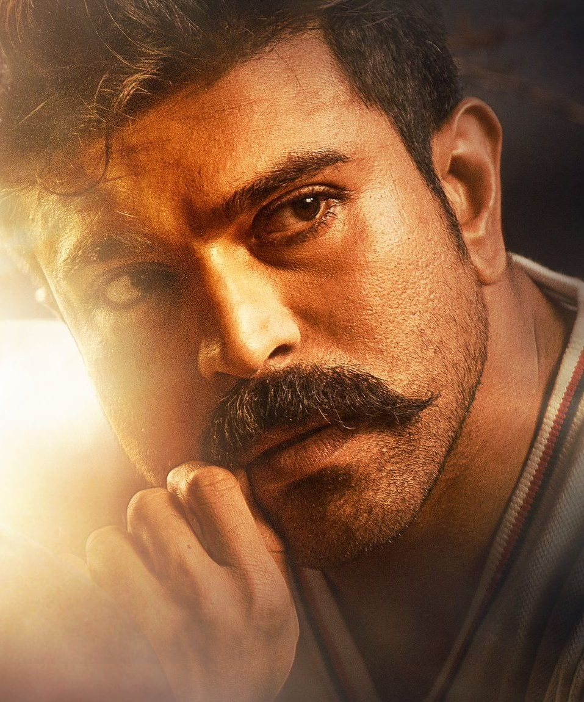

RAM CHARAN

Ram Charan is a film actor.
He is the son of legendary actor Megastar Chiranjeevi and Surekha, grandson of Allu Ramalingaih and nephew of actors Nagendra Babu and Pawan Kalyan.
He has two sisters, Sushmita and Srija. His cousin Allu Arjun is also a Tollywood actor.
He made his film debut with Chirutha.Ram Charan studied in Padma Seshadri Bala Bhavan School, Chennai and he was brought up there.
He is the famous for Dance in Telugu Film Industry and he has good skills in Martial Arts.
He knows horse riding well and the person who encouraged him to be involved in horse riding was Prabhu, a Tamil actor.
ABOUT THE HERO
-
Ram Charan is one of the highest paid actors of Tollywood and son of Telugu actor Chiranjeevi and Surekha.
He is also a dancer, producer, businessman and entrepreneur.
He owns the polo team Ram Charan Hyderabad Polo Riding Club, a Hyderabad-based airline TruJet and Devil's Circuit -
a obstacle running series. He also serves on the board of directors of MAA TV.
In 2016, he established his production house called Konidela Production Company.
Charan married Upasana Kamineni, the vice-chairman of Apollo Charity and daughter of Prathap C. Reddy, the Executive Chairman of the Apollo Hospitals, in 2012.
-
Ram Charan Tej’s made his debut in Chiruta (2007); his performance garnered many awards like Filmfare Best Male Debut Award and Cine MAA Award for Best Male Debut and got appreciations from such actors as superstar Rajnikanth,
who said he felt Charan's acting in that movie was like that of someone with over 70 films experience.
Hi second film Magadheera (2009), was a Blockbuster hit, first ever telugu film to collect over INR 100 crores.
-
Ram Charan is one of the most bankable stars in the Tollywood film industry at the moment. He already has an enviable fan base despite being relatively new in the field. So for the fans of the 'Rangasthalam'
actor, here are a few interesting facts about Ram Charan that many may not be aware of:Awarded title of ‘Mega Power Star’.
-
Ram Charan is the best example of an actor whose career is largely influenced by his famous family. He got the soubriquet of ‘Mega Power Star’ -a combination of Megastar, which is his father Chiranjeevi’s title and Powerstar,
a title given to his uncle Pawan Kalyan. Ram may have big shoes to fill, but one thing's for sure, he is slowly getting there.
-
Everyone knows Ram Charan as the son of Megastar Chiranjeevi. However, his grandfather too was a distinguished man. Allu Rama Lingaiah was a doctor who was actively involved in India’s freedom struggle.
In fact, he was even arrested by the British during the Quit India Moment. Other than his contributions to the country, he also was a famous comedian and appeared in over a 1000 Telugu movies in his lifetime.
AWARDS
- At the Asiavision Awards in 2014, he won for himself the award of Youth Icon of India.
- His role of Kala Bhairava in the movie The Great Warrior got him the Filmfare Award in Telugu Film Industry for Best Actor, in the year 2010.
- Ram Charan has won the Filmfare Award in Telugu Film Industry for Best Actor for his role in the film Rangasthalam in the year 2018.
- In 2008, Filmfare gave him a special award for the Best Debut Actor for his role as Charan in the film Chirutha.
- In the year 2019, Ram Charan also bagged the Best Actor award at the SIIMA – Telugu for the film Rangasthalam that released in 2018.
For more infromation,check Ram Charan-wikipedia
[nithyasree_krishnamurthy on instagram]